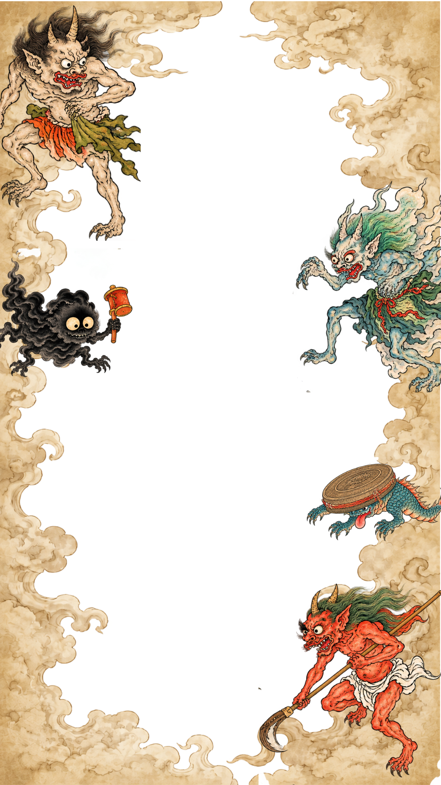

👹 百鬼夜行フォト 👹
フレームを選んで撮影しよう！
写真データはこの端末内で処理され、サーバーには保存されません。

カメラを起動しています…
※ iPhone / iPad では、保存後に「写真」アプリへ入れる操作が必要な場合があります。
※ スマホで使うときは、HTTPSで公開したページから開いてください。
フレームを選んで撮影しよう！
写真データはこの端末内で処理され、サーバーには保存されません。

※ iPhone / iPad では、保存後に「写真」アプリへ入れる操作が必要な場合があります。
※ スマホで使うときは、HTTPSで公開したページから開いてください。